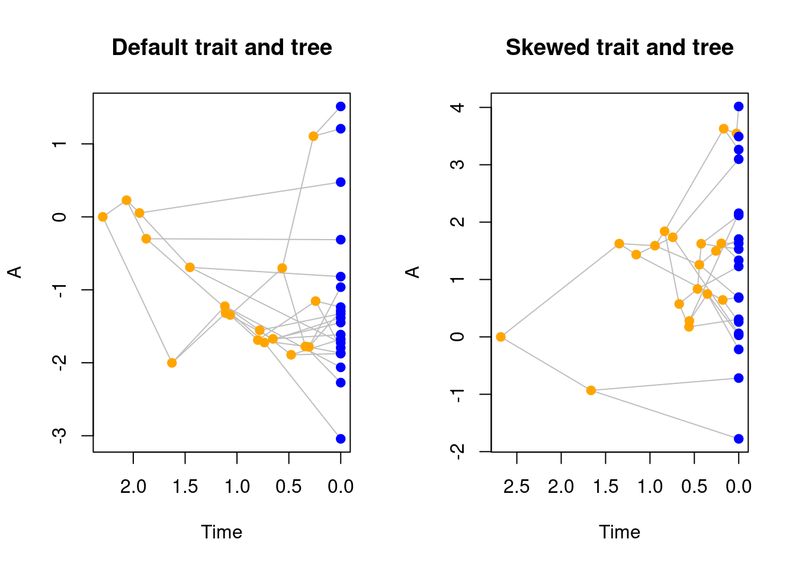

5 Making events with make.events()
5.1 Conditions
5.2 Modifications
5.3 Some events examples
5.3.1 Random mass extinction after some time
## Simulation parameters
stop.rule <- list(max.time = 5)
bd.params <- list(extinction = 0, speciation = 1)
## 80% mass extinction at time 4
mass_extinction <- make.events(
target = "taxa",
condition = time.condition(4),
modification = random.extinction(0.8))
## Running the simulations
set.seed(1)
results <- dads(bd.params = bd.params,
stop.rule = stop.rule,
events = mass_extinction)
## Plotting the results
plot(results, show.tip.label = FALSE)
axisPhylo()
5.3.2 Extinction based on a trait value after some time
## Simulation parameters
stop.rule <- list(max.time = 5)
bd.params <- list(extinction = 0, speciation = 1)
## Extinction of any tips with trait < 1 at time 4
trait_extinction <- make.events(
target = "taxa",
condition = time.condition(4),
modification = trait.extinction(1))
## Running the simulations
set.seed(7)
results <- dads(bd.params = bd.params,
stop.rule = stop.rule,
traits = make.traits(),
events = trait_extinction)
## Plotting the results
plot(results)
5.3.3 Adding a background extinction after reaching a number of living taxa
## Simulation parameters
stop.rule <- list(max.living = 50)
bd.params <- list(extinction = 0, speciation = 1)
## Adding an extinction parameter after 30 taxa
background_extinction <- make.events(
condition = taxa.condition(30),
target = "bd.params",
modification = update.bd.params(1/3, "extinction"))
## Running the simulations
set.seed(2)
results <- dads(bd.params = bd.params,
stop.rule = stop.rule,
events = background_extinction)
## Plotting the results
plot(results)
5.3.4 Reducing speciation after some time
## Simulation parameters
stop.rule <- list(max.time = 4)
bd.params <- list(extinction = 0, speciation = 1)
## Reducing speciation after reaching time 2
reduced_speciation <- make.events(
condition = time.condition(2),
target = "bd.params",
modification = update.bd.params(1/3, "speciation"))
set.seed(42)
no_event <- dads(bd.params = bd.params,
stop.rule = stop.rule)
set.seed(42)
reduced_speciation_event <- dads(bd.params = bd.params,
stop.rule = stop.rule,
events = reduced_speciation)
## Plot both trees
par(mfrow = c(1, 2))
plot(no_event, main = "No event")
axisPhylo()
plot(reduced_speciation_event, main = "Reduced speciation after time 2")
axisPhylo()
5.3.5 Changing trait process after some time
## Simulation parameters
bd.params <- list(extinction = 0, speciation = 1)
stop.rule <- list(max.time = 6)
traits <- make.traits()
## Create an event to change the trait process
change_process <- make.events(
condition = time.condition(5),
target = "traits",
modification = update.traits(process = OU.process))
## Run the simulations
set.seed(1)
no_change <- dads(bd.params = bd.params,
stop.rule = stop.rule,
traits = traits)
set.seed(1)
process_change <- dads(bd.params = bd.params,
stop.rule = stop.rule,
traits = traits,
events = change_process)
## Plot the results
par(mfrow = c(1,2))
plot(no_change, ylim = c(-7, 7))
plot(process_change, ylim = c(-7, 7))
5.3.6 Changing trait correlation after reaching a trait value
## Set the parameters
stop.rule <- list(max.taxa = 100)
bd.params <- list(extinction = 0, speciation = 1)
## A correlated trait
traits <- make.traits(n = 2, process.args = list(Sigma = matrix(1, 2, 2)))
## Event changing a trait correlation
change_correlation <- make.events(
condition = trait.condition(3, absolute = TRUE),
target = "traits",
modification = update.traits(process.args = list(Sigma = matrix(c(10,3,3,2),2,2))))
## Run the simulations
set.seed(8)
no_event <- dads(bd.params = bd.params,
stop.rule = stop.rule,
traits = traits)
set.seed(8)
change_correlation <- dads(bd.params = bd.params,
stop.rule = stop.rule,
traits = traits,
events = change_correlation)
## Visual testing
par(mfrow = c(1,2))
plot(no_event, trait = 2)
plot(change_correlation, trait = 2)
5.3.7 Event for changing a modifier
## Set the parameters
stop.rule <- list(max.time = 4)
bd.params <- list(extinction = 0, speciation = 1)
## Using a default trait and modifier object
modifiers <- make.modifiers()
traits <- make.traits()
## New condition and new modifier (increasing speciation if trait is negative)
new.condition <- function(trait.values, lineage) {
return(parent.traits(trait.values, lineage) < 0)
}
new.modify <- function(x, trait.values, lineage) {
return(x + 1)
}
## Update the modifier
change_speciation <- make.events(
condition = time.condition(3),
target = "modifiers",
modification = update.modifiers(speciation = speciation,
condition = new.condition,
modify = new.modify))
set.seed(4)
no_event <- dads(bd.params = bd.params,
stop.rule = stop.rule,
traits = traits,
modifiers = modifiers)
set.seed(4)
change_spec <- dads(bd.params = bd.params,
stop.rule = stop.rule,
traits = traits,
modifiers = modifiers,
events = change_speciation)
## Visualise the results
par(mfrow = c(1,2))
plot(no_event, main = "No event")
plot(change_spec, main = "Increase extinction for negative traits\nafter time 3")
5.3.8 Changing branch length when reaching n taxa
## Parameters
bd.params <- list(extinction = 0, speciation = 1)
stop.rule <- list(max.taxa = 100)
modifiers <- make.modifiers()
traits <- make.traits()
## multiplying branch length 100 folds
new.modify <- function(x, trait.values, lineage) {
return(x * 100)
}
## Event for increasing branch length after reaching 30 taxa
increase_brlen <- make.events(
condition = taxa.condition(30),
target = "modifiers",
modification = update.modifiers(
branch.length = branch.length,
modify = new.modify))
## Run the simulations
set.seed(5)
no_event <- dads(bd.params = bd.params,
stop.rule = stop.rule,
traits = traits,
modifiers = modifiers)
set.seed(5)
increased_brlen <- dads(bd.params = bd.params,
stop.rule = stop.rule,
traits = traits,
modifiers = modifiers,
events = increase_brlen)
## Visualise the results
par(mfrow = c(1,2))
plot(no_event, main = "No event")
plot(increased_brlen, main = "Increase branch length\nafter 30 taxa")
5.3.9 Founding event: a subtree with no fossils
## Set up parameters
stop.rule <- list(max.time = 4)
bd.params <- list(speciation = 1, extinction = 0.3)
## Events that generate a new process (founding effects)
founding_event <- make.events(
condition = taxa.condition(10),
target = "founding",
modification = founding.event(
bd.params = list(speciation = 2,
extinction = 0)),
additional.args = list(prefix = "founding_"))
## Simulations
set.seed(11)
founding_tree <- dads(bd.params = bd.params,
stop.rule = stop.rule,
events = founding_event)
plot(founding_tree, cex = 0.4)
5.3.10 Founding event with traits
## Set up parameters
stop.rule <- list(max.time = 4)
bd.params <- list(speciation = 1, extinction = 0.3)
traits <- make.traits()
## Events that generate a new process (founding effects)
founding_event <- make.events(
condition = taxa.condition(10),
target = "founding",
modification = founding.event(
bd.params = list(speciation = 2,
extinction = 0),
traits = make.traits(process = OU.process)),
additional.args = list(prefix = "founding_"))
## Simulating the tree
set.seed(19)
founding_tree <- dads(bd.params = bd.params,
stop.rule = stop.rule,
traits = make.traits(),
events = founding_event)
plot(founding_tree)